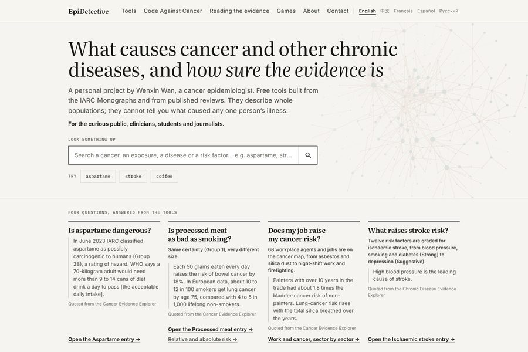
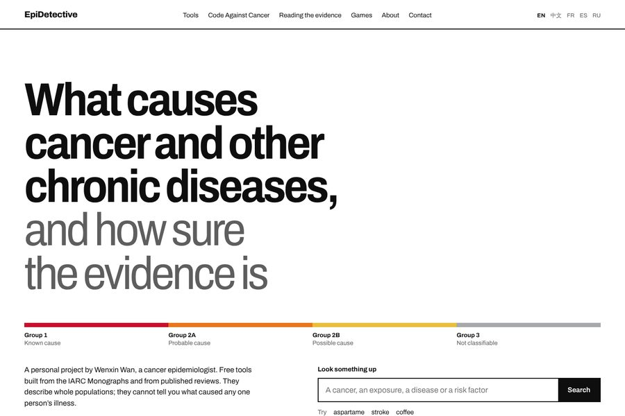
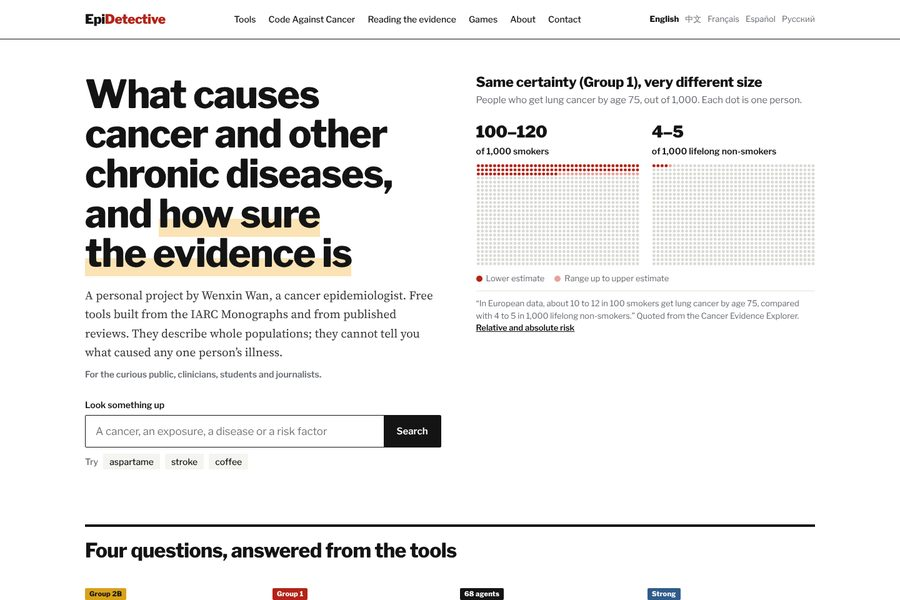
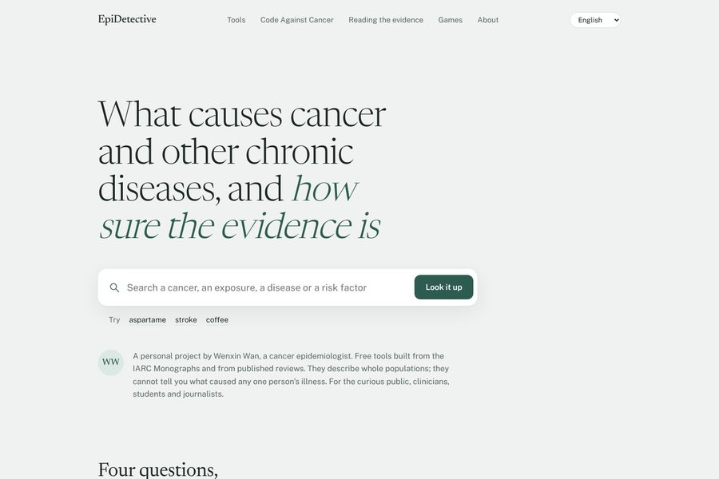
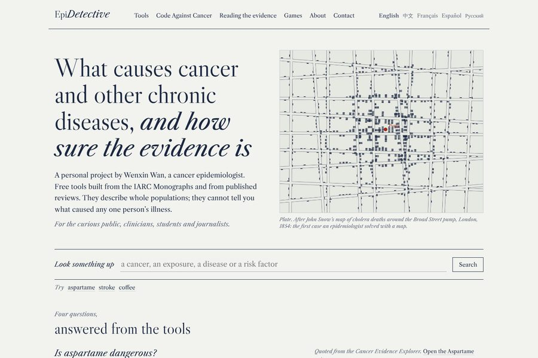
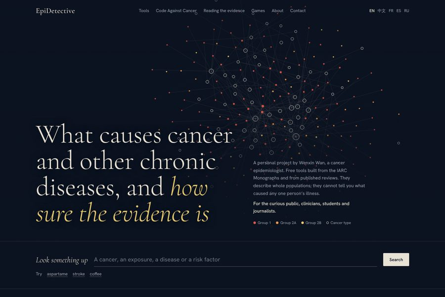

<title>EpiDetective Design Directions</title>
<meta name="claude:viewport-fit-sides" content="cover">
<link rel="preconnect" href="https://fonts.googleapis.com">
<link rel="preconnect" href="https://fonts.gstatic.com" crossorigin>
<link rel="stylesheet" href="https://fonts.googleapis.com/css2?family=Source+Sans+3:wght@400;600;700&family=Source+Serif+4:opsz,wght@8..60,400;8..60,600&display=swap">
<style>
/* Review document: one reading column for the argument, a two-column row per direction (picture left, reasoning right). */
:root{
  --bg:#FAFAF8; --surface:#FFFFFF; --fg:#17181A; --muted:#5D6067; --line:#E2E2DE; --accent:#1F4E79; --accent-soft:#E6EEF6;
  --serif:"Source Serif 4",Georgia,serif; --sans:"Source Sans 3",-apple-system,"Segoe UI",sans-serif;
}
@media (prefers-color-scheme: dark){:root:not([data-theme="light"]){
  --bg:#141518; --surface:#1C1D21; --fg:#ECECEA; --muted:#A3A6AD; --line:#2E3036; --accent:#8DB7E2; --accent-soft:#1F2A36; color-scheme:dark}}
:root[data-theme="dark"]{
  --bg:#141518; --surface:#1C1D21; --fg:#ECECEA; --muted:#A3A6AD; --line:#2E3036; --accent:#8DB7E2; --accent-soft:#1F2A36; color-scheme:dark}
*{box-sizing:border-box}
body{background:var(--bg);color:var(--fg);font:400 17px/1.6 var(--sans);margin:0}
.page{max-width:1120px;margin:0 auto;padding-left:max(16px,env(safe-area-inset-left,0px));padding-right:max(16px,env(safe-area-inset-right,0px));padding-block:48px 80px}
h1,h2,h3{font-family:var(--serif);font-weight:600;margin:0;text-wrap:balance;line-height:1.15}
h1{font-size:clamp(2rem,4.4vw,3rem);letter-spacing:-.015em;max-width:20ch}
h2{font-size:clamp(1.45rem,2.6vw,1.9rem);margin-bottom:16px}
h3{font-size:1.25rem}
p{margin:0}
a{color:var(--accent);text-underline-offset:3px}
.lede{margin-top:16px;font-size:19px;color:var(--muted);max-width:60ch}
section{margin-top:64px}
.cols{display:grid;grid-template-columns:minmax(0,1fr) minmax(0,1.1fr);gap:40px;align-items:start}
.shot{display:block;border:1px solid var(--line);border-radius:6px;overflow:hidden;background:var(--surface)}
.shot img{display:block;width:100%;height:auto;aspect-ratio:3/2}
.cap{font-size:14px;color:var(--muted);margin-top:8px}
ul.tight{margin:0;padding-left:1.1em;display:grid;gap:8px}
ul.tight li{max-width:62ch}
.keep{display:grid;grid-template-columns:repeat(3,minmax(0,1fr));gap:16px;list-style:none;padding:0;margin:0}
.keep li{background:var(--surface);border:1px solid var(--line);border-radius:6px;padding:14px 16px;font-size:15px;color:var(--muted)}
.keep b{display:block;color:var(--fg);font-weight:600;margin-bottom:2px}

.dir{display:grid;grid-template-columns:minmax(0,1fr) minmax(0,1.1fr);gap:40px;align-items:start;padding-block:40px;border-top:1px solid var(--line)}
.dir:first-of-type{border-top:0;padding-top:8px}
.dir .num{font:600 15px var(--sans);color:var(--muted)}
.dir h3{font-size:clamp(1.5rem,2.6vw,1.9rem);margin:2px 0 8px}
.dir .idea{font-size:18px;margin-bottom:16px}
dl{margin:0;display:grid;grid-template-columns:8.5em minmax(0,1fr);gap:10px 18px;font-size:15.5px}
dt{font-weight:700}
dd{margin:0;color:var(--fg)}
dd .m{color:var(--muted)}
.sw{display:inline-flex;gap:4px;vertical-align:-3px;margin-right:8px}
.sw i{width:16px;height:16px;border-radius:50%;border:1px solid var(--line);display:block}
.open{display:inline-block;margin-top:18px;background:var(--fg);color:var(--bg);text-decoration:none;font-weight:600;padding:10px 16px;border-radius:4px}
.open:hover{background:var(--accent)}
.open:focus-visible,.shot:focus-visible{outline:3px solid var(--accent);outline-offset:3px}

.rec{background:var(--accent-soft);border-radius:8px;padding:28px 30px}
.rec p+p{margin-top:12px}
.rec p{max-width:70ch}
.next{counter-reset:s;list-style:none;padding:0;margin:0;display:grid;gap:10px}
.next li{counter-increment:s;display:grid;grid-template-columns:2em minmax(0,1fr);max-width:72ch}
.next li::before{content:counter(s) ".";font-weight:700;color:var(--muted)}
.note{font-size:15px;color:var(--muted);max-width:72ch;margin-top:18px}

@media (max-width:820px){.cols,.dir{grid-template-columns:1fr;gap:20px}.keep{grid-template-columns:1fr}dl{grid-template-columns:1fr;gap:2px 0}dd{margin-bottom:10px}}
</style>

<main class="page">
  <h1>Five design directions for EpiDetective</h1>
  <p class="lede">Each demo is the English home page, with the site’s real copy, its real tools and its real numbers. Only the design changes. They are rough sketches to choose a direction from, not finished pages.</p>

  <section class="cols" aria-labelledby="why">
    <div>
      <a class="shot" href="https://epidetective.com"></a>
      <p class="cap">The home page today.</p>
    </div>
    <div>
      <h2 id="why">Why the current page feels crowded</h2>
      <ul class="tight">
        <li>More than a dozen small uppercase monospace labels sit above blocks and inside chips: “Four questions…”, “The tools”, “Open now”, “What you can do”, “Skin cancer”. This is the most recognisable template habit.</li>
        <li>Seven sections use the same recipe: label, serif headline with an italic phrase, grey paragraph, two outlined buttons with arrows. At equal volume, nothing leads.</li>
        <li>Close to 20 buttons and arrow links compete on one page.</li>
        <li>Boxes around almost everything: chips, cards, a bordered callout, outlined buttons.</li>
        <li>Pale cream paper, a bookish serif and a brick-red accent is currently one of the most common looks of AI-generated sites.</li>
        <li>The figures that show the tools’ scale (185 exposures, 469 links) are set in 11-pixel grey capitals.</li>
      </ul>
    </div>
  </section>

  <section aria-labelledby="keep">
    <h2 id="keep">What stays exactly as it is</h2>
    <ul class="keep">
      <li><b>All wording</b>Every i18n key in all five languages. The design reads from the same JSON.</li>
      <li><b>The tools and games</b>Both explorers and all three games are untouched; only the pages around them change.</li>
      <li><b>How the site is built</b>Static pages from <code>build_site.py</code>, no framework, self-hosted subset fonts, the home page budget of 9 requests and 300 KB.</li>
      <li><b>Chinese and Russian</b>The CJK system stack and a Cyrillic face for every role. Where a demo face lacks Cyrillic, it is noted below.</li>
      <li><b>Accessibility</b>Skip link, visible focus, contrast at WCAG AA, search that works without JavaScript.</li>
      <li><b>Sources first</b>Quotes stay word for word, with their source line beside them.</li>
    </ul>
  </section>

  <section aria-labelledby="dirs">
    <h2 id="dirs">The five directions</h2>

    <article class="dir">
      <a class="shot" href="1-monograph.html"></a>
      <div>
        <p class="num">Direction 1</p>
        <h3>Monograph</h3>
        <p class="idea">A Swiss grid, one typeface and thick black rules. The only colour on the page is the four IARC groups, so colour always means evidence.</p>
        <dl>
          <dt>References</dt><dd>Josef Müller-Brockmann’s <i>Grid Systems in Graphic Design</i>; Experimental Jetset (the Whitney Museum’s Responsive W identity); Pentagram’s institutional work; the sites of type foundries such as Klim and Grilli Type.</dd>
          <dt>Why it fits</dt><dd>The Swiss style was made for information that must read the same way to everyone. An evidence reference should look neutral and exact, and a strict grid carries over cleanly into Chinese and Russian.</dd>
          <dt>What changes</dt><dd>No boxes or chips. The four questions become an index. Tool counts become large condensed numerals. The evidence scale runs under the headline.</dd>
          <dt>Watch-outs</dt><dd>Can feel cold to a worried visitor. Depends on exact spacing to look deliberate.</dd>
          <dt>Type, colour</dt><dd><span class="sw"><i style="background:#FFFFFF"></i><i style="background:#0E0E0E"></i><i style="background:#C8102E"></i><i style="background:#E8761E"></i><i style="background:#E9BE3C"></i></span>Archivo, with its narrow widths for figures. <span class="m">No Cyrillic: Russian would use Golos Text, already in the repo.</span></dd>
        </dl>
        <a class="open" href="1-monograph.html">Open demo 1</a>
      </div>
    </article>

    <article class="dir">
      <a class="shot" href="2-data-desk.html"></a>
      <div>
        <p class="num">Direction 2</p>
        <h3>Data Desk</h3>
        <p class="idea">The front page of a graphics desk. The hero is a chart of the site’s main lesson: two Group 1 causes with the same certainty and very different sizes, drawn as 1,000-dot icon arrays.</p>
        <dl>
          <dt>References</dt><dd>The New York Times graphics desk and The Upshot; Reuters Graphics; The Pudding; Our World in Data; the FT’s Visual Vocabulary; the icon-array fact boxes of the Harding Center for Risk Literacy.</dd>
          <dt>Why it fits</dt><dd>“How sure” versus “how big” is a data story, and icon arrays are a standard way risk communicators show absolute risk. Journalists and clinicians already trust the headline, chart and sourced caption pattern.</dd>
          <dt>What changes</dt><dd>Each question leads with its number (9–14 cans, +18%, 1.8×, 12). Group tags are colour-coded. The labels table becomes a colour scale.</dd>
          <dt>Watch-outs</dt><dd>Charts must be updated when the numbers change. Must not drift into the urgency of a news site.</dd>
          <dt>Type, colour</dt><dd><span class="sw"><i style="background:#FFFFFF"></i><i style="background:#141414"></i><i style="background:#B42318"></i><i style="background:#DD6B20"></i><i style="background:#FBE3B5"></i></span>Libre Franklin and Source Serif 4. <span class="m">Both have Cyrillic.</span></dd>
        </dl>
        <a class="open" href="2-data-desk.html">Open demo 2</a>
      </div>
    </article>

    <article class="dir">
      <a class="shot" href="3-quiet-clinic.html"></a>
      <div>
        <p class="num">Direction 3</p>
        <h3>Quiet Clinic</h3>
        <p class="idea">A calm health product. The search is the front door, the four answers stay folded until asked for, and everything secondary becomes one short list.</p>
        <dl>
          <dt>References</dt><dd>Apple Health; One Medical; GOV.UK and NHS.UK service design (GOV.UK won the Design Museum’s Design of the Year in 2013); Google’s single search box.</dd>
          <dt>Why it fits</dt><dd>Many visitors arrive worried about one thing, such as aspartame. The page lowers the temperature: one action, plain language, nothing shouting. It follows the GOV.UK principle “do less”.</dd>
          <dt>What changes</dt><dd>A large search field, an accordion for the questions, two soft panels for the tools, one muted green accent.</dd>
          <dt>Watch-outs</dt><dd>The least distinctive of the five, with some risk of looking like any health app. Clinicians and journalists may want more on screen at once.</dd>
          <dt>Type, colour</dt><dd><span class="sw"><i style="background:#EFF2F0"></i><i style="background:#FFFFFF"></i><i style="background:#1B2621"></i><i style="background:#2D5B4F"></i></span>Newsreader and Public Sans (the typeface of the US Web Design System). <span class="m">Neither has Cyrillic: Russian would use Literata and Golos Text, both already in the repo.</span></dd>
        </dl>
        <a class="open" href="3-quiet-clinic.html">Open demo 3</a>
      </div>
    </article>

    <article class="dir">
      <a class="shot" href="4-casebook.html"></a>
      <div>
        <p class="num">Direction 4</p>
        <h3>Casebook</h3>
        <p class="idea">A scholarly casebook built on the name EpiDetective. The opening plate follows John Snow’s 1854 cholera map. Every source sits in the margin beside the claim it supports.</p>
        <dl>
          <dt>References</dt><dd>John Snow’s Broad Street map; Edward Tufte’s books and their margin notes; Stripe Press; <i>Works in Progress</i>; the Wellcome Collection.</dd>
          <dt>Why it fits</dt><dd>Epidemiology began as detective work, and Snow’s map is its founding image. Margin notes put “every entry names its sources” on the page itself. Strong for students and schools, and it ties in with The Lung Detective.</dd>
          <dt>What changes</dt><dd>A text column with a margin, numbered figures, italic serif questions, the map as the hero.</dd>
          <dt>Watch-outs</dt><dd>Serif-heavy and can read as historical. Margin notes need a careful phone layout. Chinese needs its own serif setting.</dd>
          <dt>Type, colour</dt><dd><span class="sw"><i style="background:#F2F3EF"></i><i style="background:#1B2740"></i><i style="background:#5F687A"></i><i style="background:#9C2A20"></i></span>Libre Caslon Display and Text. <span class="m">No Cyrillic: Russian would use Literata.</span></dd>
        </dl>
        <a class="open" href="4-casebook.html">Open demo 4</a>
      </div>
    </article>

    <article class="dir">
      <a class="shot" href="5-atlas.html"></a>
      <div>
        <p class="num">Direction 5</p>
        <h3>Atlas</h3>
        <p class="idea">An atlas of causes. The real cancer map, with all 185 exposures, 68 cancers and 469 links from the site’s own data, is drawn as a star chart behind the headline. Hover a point to read its name.</p>
        <dl>
          <dt>References</dt><dd>Moritz Stefaner’s data-art work, such as the OECD Better Life Index; Fathom Information Design; Stamen Design; Cameron Beccario’s earth.nullschool.net; engraved celestial atlases.</dd>
          <dt>Why it fits</dt><dd>The evidence maps are EpiDetective’s most original asset. Putting the real map on the front door shows at once that these are instruments for exploring evidence.</dd>
          <dt>What changes</dt><dd>A dark ground, a live map as the hero, the two tools presented as plates.</dd>
          <dt>Watch-outs</dt><dd>Dark pages are harder for long reading and printing, so the inner pages would need a light theme. The canvas and 28 KB of data must fit the page budget. Closest of the five to a “tech” look.</dd>
          <dt>Type, colour</dt><dd><span class="sw"><i style="background:#0C1320"></i><i style="background:#E8E2D4"></i><i style="background:#E0584B"></i><i style="background:#EE9A4B"></i><i style="background:#E6C86E"></i></span>Cormorant Garamond and Hanken Grotesk. <span class="m">Cormorant has Cyrillic; Russian body text would use Golos Text.</span></dd>
        </dl>
        <a class="open" href="5-atlas.html">Open demo 5</a>
      </div>
    </article>
  </section>

  <section aria-labelledby="rec">
    <div class="rec">
      <h2 id="rec">My recommendation</h2>
      <p><b>Direction 2, Data Desk.</b> It is the only direction where the design itself teaches the site’s main lesson. The first thing a visitor sees is that the same certainty can mean very different risks. Its conventions are already familiar to the journalists and clinicians you write for. It also suits the long inner pages (Reading the evidence, Work and cancer, How we check), which read naturally as articles with figures.</p>
      <p>If you want something quieter and more timeless, Direction 1, Monograph, is the safest base. Directions can also be combined, for example the Monograph grid with the Data Desk hero chart, or the Data Desk with Casebook margin notes for sources.</p>
    </div>
  </section>

  <section aria-labelledby="next">
    <h2 id="next">Once you choose</h2>
    <ol class="next">
      <li>I rewrite <code>site.css</code> and adjust the structure of <code>templates/*.html</code> for the chosen direction, keeping every i18n key and URL.</li>
      <li>I carry it through every page (home, About, How we check, Reading the evidence, Work and cancer, Code Against Cancer, Games, the explorer page, 404) in all five languages.</li>
      <li>I self-host subset fonts with Cyrillic and CJK handling, within the 9-request, 300 KB budget.</li>
      <li>I check Chinese and Russian layouts, phone widths, keyboard focus and contrast, then rebuild with <code>build_site.py</code>.</li>
    </ol>
    <p class="note">These demos load fonts from Google Fonts for speed and cover only the English home page. Navigation on phones is left uncollapsed, and the links inside the demos go nowhere.</p>
  </section>
</main>
